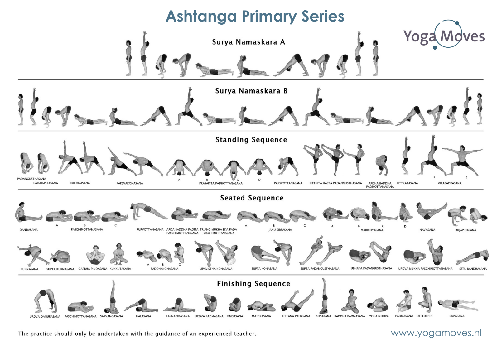
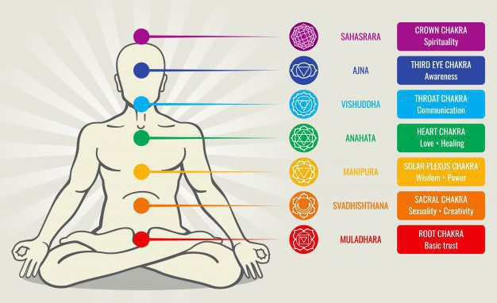
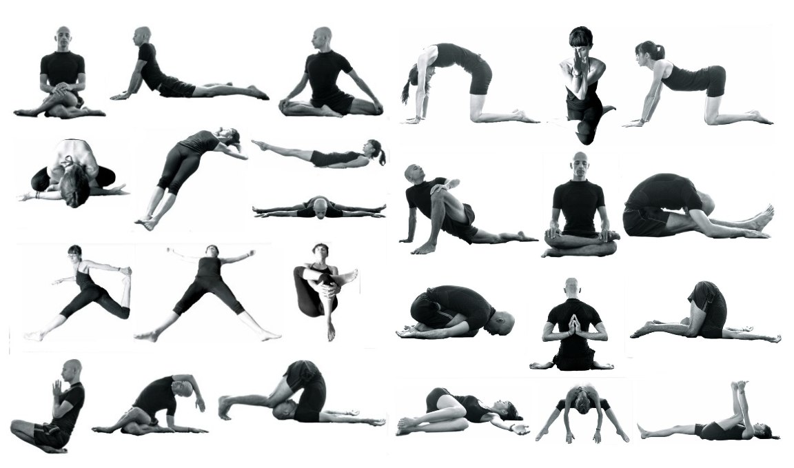

The literal translation of the word “yoga,” which is from Sanskrit (recognized as the original language of yoga) is “union,” says Sherwin. And that’s an apt way to describe yoga as we know it today, she says. “We define it as bringing together the mind and the body by use of the breath.” Many people have come to know the physical benefits of yoga and think of it as a type of workout, says Sherwin. But yoga is way more than that. “It’s really an entire lifestyle; the postures are only one piece of it,” she says. Yoga began in India and has been around for about 5,000 years, says Sherwin. “Originally it was taught one-on-one and only to men of the highest caste,” she says. Traditionally, yoga is a system to foster well-being on the physical, mental, emotional, and spiritual levels. Yoga is now not generally thought of as a set of religious beliefs. It can be practiced in a completely secular manner, and it's practiced by people of all faith traditions, as well as people who are agnostic and atheist, according to the Yoga Alliance. Yoga is thought to have first come to the United States at the end of the 19th century and beginning of the 20th. One critical moment was when Swami Vivekananda spoke at the World Parliament of Religions in Chicago in 1893. Another milestone in yoga’s spread in the West was Paramahansa Yogananda’s book, Autobiography of a Yogi, published in 1946 and still read by many yoga students, Sherwin says. In the first half of the 20th century, it was more common for yoga instructors to travel from city to city to teach a yoga class or give a yoga lecture rather than teach in a studio (as is the case today). Notably, changes in U.S. immigration policy starting in 1965 allowed more South Asian immigrants to come to America (including yogis from India, where the practice was more established). By the 1970s, yoga studios and books could be found across the United States.

Yoga didn't originate as an exercise program, but some styles have been adapted into workouts focused on the physical parts of the practice, says Edward Laskowski, MD, a physical medicine and rehabilitation specialist and the former codirector of Mayo Clinic Sports Medicine in Rochester, Minnesota. “People have different goals coming into yoga. Some may do yoga for the contemplative or meditative part of it and some people might want more of the exercise and activity part." Anything that elevates our heart rate for a consistent period of time is beneficial to overall fitness, he says. “The heart is a muscle, and when you challenge it by elevating your heart rate you make it stronger,” says Dr. Laskowski. Yoga probably isn’t in the same category of aerobic exercise as running or biking, says Laskowski. But the amount of aerobic benefit a person could get from yoga depends a lot on the style and pace of the type of yoga you’re doing, he says. Yoga can also help build strength, Laskowski says. Certain positions and poses where a person must hold up part of their body weight will challenge a muscle and make it stronger, he says. It’s a good way to get your resistance training in, because yoga builds functional strength (meaning you get stronger by using multiple joint and muscle groups together rather than strengthening a specific muscle in isolation, as you might do in weight lifting). “That’s good, because that’s what we do in our daily life,” he says.
“The benefits of yoga are different for different people,” Laskowski says. “Overall, it has components that can help with flexibility, strength, balance, and stability.” Research has shown it can also help with specific measures of health, like eating habits, weight loss and weight loss maintenance, and cardiovascular health.
A review looking at one year of recent research found that people who practiced yoga saw improvements across several measures of health, including: anxiety, stress, body composition, blood pressure, inflammation, and metabolic markers in people with type 2 diabetes. A meta-analysis found that yoga interventions helped middle-aged people with a body mass index (BMI) of 25 or higher to lower their blood pressure. The benefits were greater when the yoga intervention included breathing techniques and meditation. Another study found that yoga motivated nearly two-thirds of people to exercise more, and 40 percent of people to eat healthier. There is also evidence that yoga may help people with certain health conditions and chronic diseases manage pain and other symptoms, and with overall quality of life.
There are about 20 major types of yoga, and certain kinds can appeal to certain individuals, says Laskowski. That’s because people often have different goals and reasons for wanting to do yoga, he says. Depending on where you live and the size of the yoga community, you may find several types of yoga offered at studios near you. Here are a few of those types.
Ashtanga yoga is a physically demanding type of yoga that moves quickly from pose to pose. Unlike flow or vinyasa yoga, there are set sequences that are meant to be performed in a specific order. Ashtanga yoga can be practiced in a teacher-led class or in a Mysore format. Mysore is self-guided with an instructor present but not leading the class. In a Mysore format, students are expected to know the sequence and timing of the poses from memory, Fleming explains.
Ashtanga yoga is an eight-limbed path of spiritual practice and conscious living. It is a philosophical system that combines meditation, ethics, observances, and physical practice.
Kundalini yoga combines postures, breathing, meditation, and the chanting of mantras. Traditionally, kundalini yoga is meant to “awaken” the different energies inside each of us and heighten consciousness. The word "kundalini" means "coiled snake" in Sanskrit. In early Eastern religion, it was believed that divine energy was created at the base of the spine. Kundalini yoga is supposed to arouse the sleeping Kundalini Shakti from its coiled base through the 6 chakras, and penetrate the 7th chakra, or crown.

Yin yoga is a style in which there’s no flowing from pose to pose. You stay mostly seated on the floor or lying on your back or belly, Fleming says. It’s more passive and focuses on stretching. And the poses are held longer than in other types of yoga, says Fleming. “This kind of stretching can be good for the joints in a different way than active stretching,” says Fleming.
Yoga nidra is more of a meditation than a pose-filled yoga class. Students lie on their backs (a blanket or bolster can be used to add comfort) as the teacher guides them through focusing on and relaxing different parts of the body. People who practice yoga nidra are encouraged to “let go” and surrender to total relaxation and peace. It can be as relaxing and restorative as actual sleep, says Fleming

Yoga nidra, also known as "yogic sleep", is a relaxation technique that combines mental imagery with a specific yoga posture. It's a form of active meditation that involves lying down and relaxing. The goal of yoga nidra is to promote a deep state of relaxation. It works with the autonomic nervous system, which includes the sympathetic and parasympathetic nervous systems.
Yoga nidra can help relieve stress, frustration, and insomnia. It can also help harmonize the brain hemispheres, promoting better mental performance

The purpose of Yoga is to create harmony in the physical, vital, mental, psychological and spiritual aspects of the human being. In the foregoing pages of this book, I have described the Technique of relaxation in different postures viz., standing, lying and sitting postures which brings in this harmony. Yoga is not mere practice for an hour or two in a day but it is the most scientific way of living, all the twenty-four hours of the day. During the whole day you may be only in one of these three postures and hence a skilful adjustment in them will effect the required harmony. "Yogasthah Kuru Karmani- Be established in Yoga and do all your duties." "Yogah karmasu Kausalam-Yoga is skill in action." Skill here means to be in tune with the nature of the Supreme Reality. Be a Yogin always, is the loving instruction of Lord Krishna. Convert life into Yoga, so that you may ensure success in all the fields of activity. By regular practice, by using your presence of mind, skill and wisdom, you can become Yogins and enjoy happiness and peace, whatever be the circumstances and conditions in which you are placed.
Yoga isn't merely physical exercise; it's a holistic approach to body, mind, and spirit. In our complex world, it continues to guide individuals towards a healthier, more fulfilling life amidst chaos. Its global appeal is a testament to the enduring relevance of its ancient wisdom in our modern lives. It began as a spiritual practice but has become popular as a way of promoting physical and mental well-being. Although classical yoga also includes other elements, yoga as practiced in the United States typically emphasizes physical postures (asanas), breathing techniques (pranayama), and meditation (dyana).